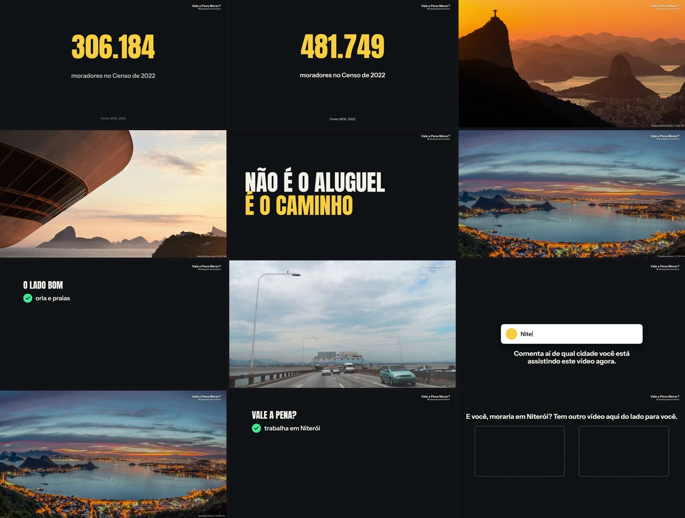
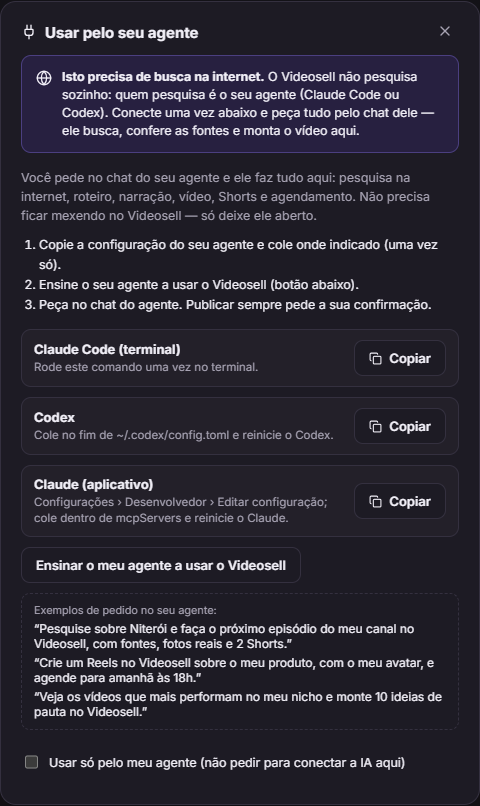

Estúdio de vídeo em código
Peça um episódio no Claude Code ou no Codex. Receba o vídeo animado em código, com narração e imagens reais, além dos Shorts e do pacote para publicar.
Adicionar o Videosell R$ 97 Continuar só com o CarrossellPagamento único · Windows · 7 dias de garantia
Ver a demonstração completa ↓Trechos do piloto de Niterói. Cenas e corte gerados no Videosell, com voz do Windows.
Antes, fazer um episódio sem aparecer exigia horas de edição ou várias assinaturas. E produzir em escala com o mesmo template pode esbarrar na regra de conteúdo repetitivo do YouTube.
Com o Videosell, o agente escreve as cenas e o seu computador renderiza. Um canal de cidades pode misturar fotos e dados. Um de história pode criar uma linguagem visual própria. Você ajusta o formato pelo chat e reaproveita as cenas que ficaram boas.
Referências de mercado publicadas por terceiros. A demonstração do Videosell está no topo.
Uma explicação visual simples com bonecos de palito e traço de Paint.
Ver o exemplo em vídeo no X ↗Um estudo em vídeo sobre como um criador pesquisou nichos antes de produzir o primeiro episódio.
Ver a análise em vídeo no X ↗Um fluxo de roteiro, narração e cenas comandado por um agente.
Ver a demonstração em vídeo no X ↗O mecanismo: canal em código
Use a pesquisa do seu agente e o render local do Videosell para transformar uma ideia em um episódio com identidade própria.
Busca na internet, confere as fontes, escreve o roteiro em falas, os títulos e as frases das thumbs. Usa as ferramentas de pesquisa do seu agente.
Narra, alinha palavra por palavra, escolhe fotos e vídeos com licença, anima cada cena, revisa quadro a quadro e renderiza em 1080p.
Vídeo de 10+ min, 2 Shorts com legenda palavra por palavra, 3 thumbs, 3 títulos e descrição com capítulos, fontes e créditos.
Você dirige pelo chat. Revise o roteiro, os quadros e o vídeo final.
Por dentro
Do pedido no chat aos arquivos de um piloto real sobre Niterói.
Uma frase no Claude Code ou no Codex. O agente já sabe a ordem do trabalho: o Videosell instala o guia dele com um clique.
Você, no chat da sua IAPesquise sobre Niterói e faça o próximo episódio do meu canal no Videosell, com fontes, fotos reais e 2 Shorts.
O agente traz os dados e o app confere: classifica a fonte (oficial, imprensa, blog), marca dado velho, junta confirmações e não deixa número entrar na tela sem fonte.
Antes do render final, o agente olha folhas de quadros: texto estourando, foto que não bate com a fala, cena vazia. Corrige só a cena com problema.

3 thumbs, 3 títulos e a descrição com capítulos reais, a lista de FONTES e os créditos de cada foto e música, dentro do limite do YouTube.
Niterói tem fama de qualidade de vida. Mas tem um preço que pouca gente conta. CAPÍTULOS 00:00 Gancho 00:16 Contexto 00:32 Tese contrária 00:43 O lado bom 00:54 Virada 01:11 Comparação 01:24 Pergunta e assinatura FONTES IBGE — Cidades e Estados (2022) FOTOS "Praia de Icaraí - Niterói - Panoramica" por Leo Balter, CC BY-SA 3.0, via Wikimedia Commons "Panorâmica do Parque da Cidade" por Claudney Neves, CC BY-SA 3.0, via Wikimedia Commons "Vista Geral do Museu de Arte Contemporânea de Niterói" por Maria Fátima Leite, CC BY-SA 4.0, via Wikimedia Commons MÚSICA "Vibing Over Venus" Kevin MacLeod (incompetech.com), CC BY 4.0
Sem mexer no app
O Videosell fica aberto no seu computador e o seu agente faz o trabalho por ele: pesquisa, roteiro, vídeo, Shorts e pacote para subir.

Só nesta tela
App para Windows e treinamento do Estúdio de Canais Dark. Aprenda a ir da seleção do nicho ao episódio editado, com 2 Shorts, capa, título, descrição e créditos. Leve os arquivos para YouTube, TikTok e Instagram.
Garantia de 7 dias. Testou e não fez sentido? Você pede o reembolso dentro de 7 dias e pronto.
Não, obrigado. Vou continuar só com os carrosséis.Roda na mesma assinatura do ChatGPT (Plus ou Pro) ou do Claude (Pro ou Max) que você usa no Carrossell.
De dois jeitos: com as views, quando o canal entra no programa de parcerias do YouTube, e com o que você vende no link da descrição: o seu produto, um curso ou um link de afiliado.
Não. Você usa a mesma assinatura do Carrossell: ChatGPT (Plus ou Pro), com o Codex, ou Claude (Pro ou Max), com o Claude Code. O Videosell não cobra crédito por vídeo.
Não. “Em código” é como o vídeo é feito por dentro. Você copia uma configuração uma vez, clica em “Ensinar o meu agente” e conversa no chat.
Qualquer nicho com assunto para pesquisar: cidades, curiosidades, história, finanças, tecnologia, ciência, esportes, mistérios. Se dá para contar com fatos, dá para virar canal.
Você escolhe: Kokoro, que roda no seu computador sem créditos; ElevenLabs ou OpenAI pela sua chave; ou a sua própria gravação.
Use Windows 10 ou 11. O tempo de render depende do computador e da quantidade de cenas.
Não. São R$ 97 uma vez, só nesta tela. A assinatura da sua IA e as vozes por API, se você escolher usar, ficam nas suas contas.
Carrossell + Videosell · Pagamento único
Não, obrigado.